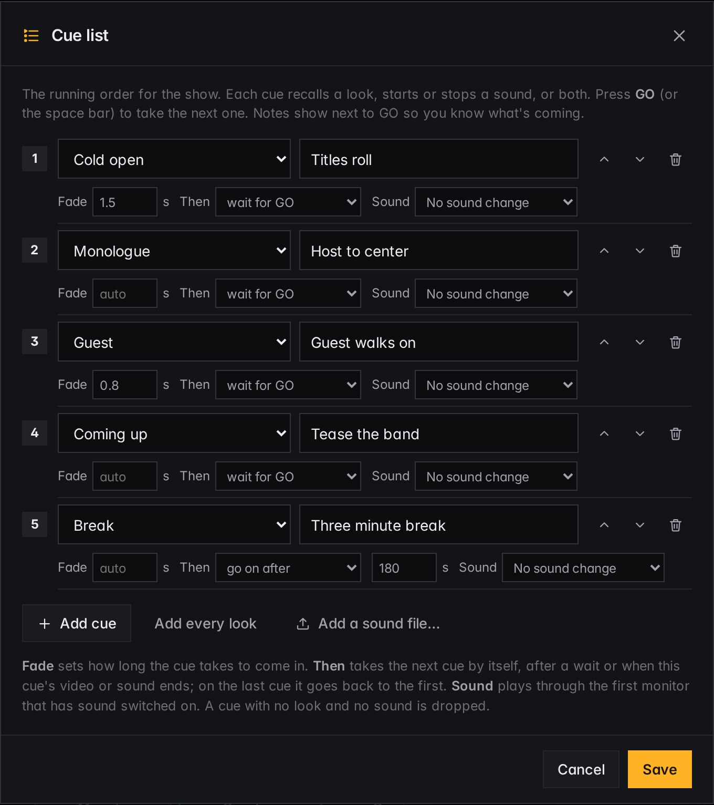
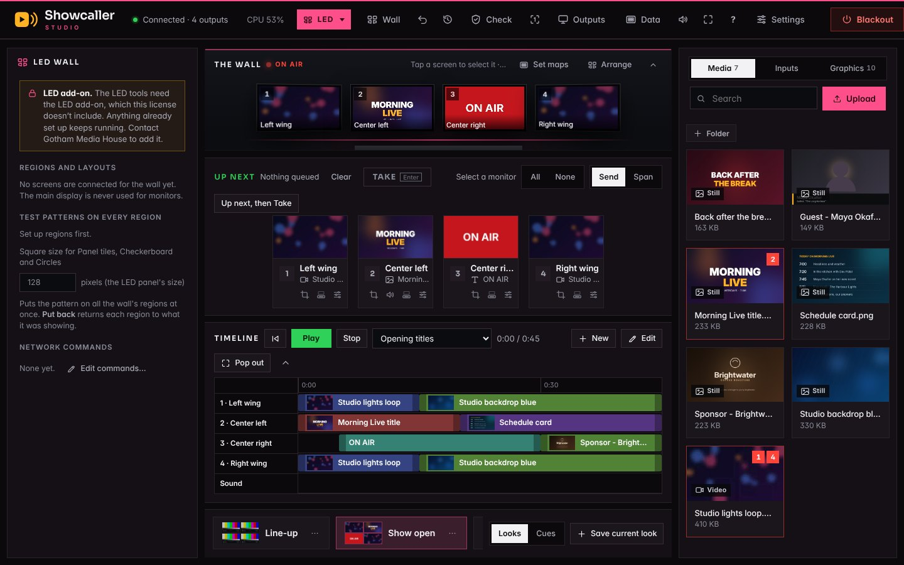
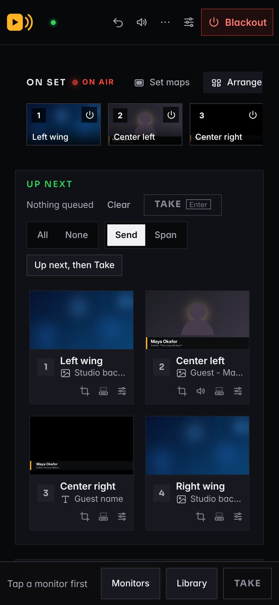

Showcaller Studio puts video, stills, live cameras, web pages and graphics on set monitors, LED walls and projectors. One computer drives the screens. The crew runs them from a laptop, tablet or phone.
The control page, recorded in real time from the current app: recall two looks, send a still to one monitor, then step through the cue list with GO.
On the set · four monitors
What the set shows at the same moment. The four pictures were recorded from Showcaller Studio’s own monitor outputs during the run-through above and placed on a drawn set. “Morning Live” is a made-up show.
Windows and MacOne set computer drives every screen
Your own networkNo cloud service in between
Stream Deck, OSC, MIDIButtons and show control
ATEM, vMix, OBSLooks can follow the switcher
The Showcaller apps
One family of apps for the whole show
Multiview, Timer, Replay and the rest work alongside Showcaller Studio. Showcaller Hub installs and updates them all, and a Studio license also unlocks the Pro features in Timer and Multiview.
Pick what you're running when Showcaller Studio opens. Each kind has its own look and its own tools, and the ones you don't need stay out of the way. Switch any time with Alt+1 to 5.
Features
Built on a working set, for the people who run one
Save the whole set as a look. Run the show with GO.
A look remembers what every monitor is showing and recalls it in one tap. Put looks in running order and step through them with GO or the space bar.
A fade time for each cue
Cues that follow on by themselves, after a wait or when a video ends
Music and stings that start and stop with a cue
Notes beside GO so you know what's next

One picture across many screens
Span a video or still across monitors, LED regions or projection surfaces. Each screen shows its own part, and the same video stays in step on every one.
The set drawn at its true proportions
Gaps between TVs accounted for
Works across linked computers

Run it from anywhere in the building
The control page opens on any laptop, tablet or phone on your network. Nothing to install on the crew's devices.
An operator PIN for running the show, an admin PIN for settings
A view-only link for producers and clients
A simple phone remote with big buttons for looks, GO and Blackout
Remote access over Tailscale, never an open port

Anything on any screen
Video, stills, playlists, cameras and capture cards, app windows, web pages, clocks, countdowns and text.
Works with your control room
Stream Deck through Companion, OSC and MIDI. Follow settings for ATEM, vMix, OBS and tally recall a look when the program source changes.
Made for live
A pre-show check, undo, a Blackout key that works from any window, automatic recovery when a source drops, alerts on your phone, daily backups and updates you can roll back.
Sound where you want it
Choose the sound output per monitor, set levels and lip-sync delay, and watch meters on the page or on a monitor.
Show files
Each production keeps its own sources, looks, cues and schedule. Switch shows without rebuilding the set.
Graphics from a spreadsheet
Point a lower third at a Google Sheet or paste a table. Names and titles fill in, and Next row moves the whole show on.
A timeline
Lay pictures on a track for each monitor and press Play, for a timed open or a walk-in loop that runs itself.
Locked down
Signed updates only, PINs with lockouts, a code on screen before a new computer can join, and one button to sign out a lost phone.
Bigger sets
Link a second computer and its screens join the same set, numbered and controlled from the same page.
Getting started
Up and running in an afternoon
STEP 1
Install on the set computer
Plug in the screens. Showcaller Studio finds them and never touches the computer's own display.
STEP 2
Add media and build looks
Drag files in, send them to monitors, and save each arrangement as a look.
STEP 3
Run the show
From the control page, a Stream Deck, your switcher, or a schedule.
Free trial · Beta
Try everything free for 14 days
Showcaller Studio is in beta. Every new install runs for 14 days with everything unlocked, including LED and Projection, so you can build a real show on your own screens before you decide.
Monitors, LED, Projection, Signage and Multiviewer
Every source type, look, cue and control option
No card and no key needed to start
Your looks and settings carry over when you license it
Get the free trialTell us about your set and we'll send the installer for Mac or Windows.
Questions
Good to know
What do I need to run it?
A Windows PC or a Mac with a video output for each screen. The computer's own display is kept for the operator and never used as a monitor.
Does it need the internet?
No. It runs on your computer and your network. Web sources and phone alerts need a connection; everything else works offline.
Can I use it for just one show?
Yes. Licenses can be yearly or end on a date you choose, so a single production is covered. While we're in beta, get in touch and we'll work out what fits your show.
What happens if my license runs out during a show?
The show carries on. Showcaller Studio never takes a picture off a monitor over licensing; it reminds you on the control page until you renew.
Can I try it first?
Yes. Every new install is a free 14-day trial with everything unlocked, and it comes with a demo for each kind of show, with sample media. We're happy to walk you through it on a call.
Can I add LED or Projection later?
Yes. An add-on is a new key for the same computer. Nothing is reinstalled and your shows stay as they are.
Who makes it?
Gotham Media House, a video production company with 20 years in broadcast. Showcaller Studio was built to run our own studio sets, then offered to other studios.
See it on your own screens.
Tell us what's on your set and we'll show you how Showcaller Studio would run it.
Thanks, we've got it. We'll reply to the email you gave, usually within one working day.